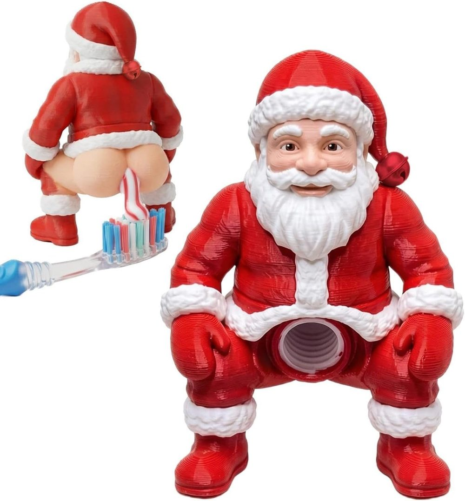
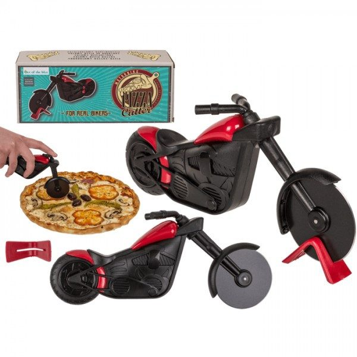
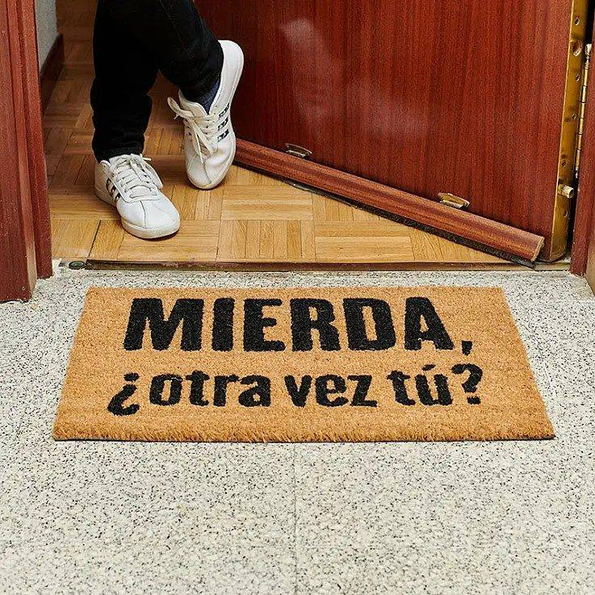

Navidad · Ideas originales para regalos inolvidables
Regalos frikis y locos
Por el equipo de Casa y Comparativa · Precios del 14 de noviembre de 2026
Imagen ilustrativa de ambiente navideño.
Hay regalos que se usan, regalos que se agradecen y regalos que se recuerdan porque, al abrirlos, a alguien se le escapa la risa. Esta página es para los terceros. Si buscas el jersey correcto o la sartén que no falla, eso irá en las otras dos páginas del apartado de Navidad, que todavía estamos preparando. Aquí venimos a complicarle un poco la vida al árbol, al baño y al felpudo.
No todo lo divertido está en Amazon, y no pasa nada: si un objeto solo se vende en otra tienda, lo enlazamos igual. Cuando también está en Amazon, ponemos el enlace de afiliado y, si encontramos la misma cosa en otra web, lo decimos con el precio de hoy. Sin inventar datos: si falta uno, lo dejamos en sin dato.
Aviso: En calidad de Afiliado de Amazon, obtenemos ingresos por las compras adscritas que cumplen los requisitos aplicables. Los enlaces a otras tiendas no son de afiliado. Los precios los consultamos el 14 de noviembre de 2026, hacia las 21:00 (hora de Madrid). El precio final es el que marque cada tienda al comprar.
Navidad gamberra
Para el árbol, la cocina de la cena y ese baño que, de pronto, se convierte en el centro de la fiesta. Humor para adultos, con las pegas dichas en voz alta.

El Papá Noel que «ayuda» con la pasta de dientes
Es un tapón que se enrosca en el tubo y, según la ficha, se adapta a la mayoría de pastas de dientes. El paquete mide 10,5 × 8,5 × 7 cm y pesa 50 g. La idea es evidente: cada vez que alguien se lava los dientes, Papá Noel pone su granito de arena. Gracioso, barato y del tamaño de un calcetín navideño. El pero no es el chiste, sino el calendario: hoy Amazon anunciaba entrega el viernes 11 de diciembre, y el producto no tiene opiniones.
7,00 €Amazon.es · entrega anunciada el 11 de diciembre · valoraciones: sin dato
Vendido por zexuanl. No consta como enviado por Amazon; aparece en Amazon Global Store. Fabricante: genérico. No hemos encontrado este modelo en otra tienda española.
Un corsé rojo de poliéster, de Disfrazzes, pensado para quien quiera un toque de Mamá Noel sin comprar un disfraz entero. Importa leer la ficha con calma: el artículo es solo el corsé. El gorro y la falda que pueden aparecer en la foto no figuran como parte del producto. Se ofrece en tallas S, M, L y XL.
22,99 €Disfrazzes · tallas S, M, L y XL
Tienda española. Material: poliéster. No hemos encontrado este mismo modelo en Amazon.es.
Un dispensador de pañuelos de peluche, rojo, con pinta de adorno de escaparate. Es una novedad: en Amazon todavía no tiene opiniones, así que lo que sabemos sale de la ficha. Un detalle práctico: los pañuelos no salen por la nariz, sino por una abertura de la parte de atrás o de abajo. Hoy costaba 31,99 €, con envío en 4 a 5 días. Lo vende y lo envía LaiusyeDirect, que por ahora tiene un 0 % de valoraciones positivas (1 de 5 estrellas, 3 valoraciones en total). No consta como enviado por Amazon.
31,99 €Amazon.es · novedad · envío en 4 a 5 días · valoraciones del producto: sin dato
Vendido y enviado por LaiusyeDirect. Aparece en Amazon Global Store. Material según la ficha: peluche. Medidas del producto: sin dato. No hemos encontrado este modelo en otra tienda española.
Un pack de dos figuritas colgantes, de unos 10 × 10 × 2 cm, pensadas para el árbol… o para esconderlas en la rama de atrás y ver quién las encuentra primero. La ficha las marca expresamente para público adulto. Si en la cena va a haber niños cotilleando el árbol, este no es el adorno. Si la reunión es de adultos con sentido del humor, es de los más baratos de esta lista y, además, lo envía Amazon.
7,49 €Amazon.es · entrega anunciada el 21 de noviembre · valoraciones: sin dato
Vendido por Quinliva y enviado por Amazon. Marca: Quinliva. Audiencia destinataria: adulto. No hemos encontrado este modelo en otra tienda española.
Un set de dos delantales de poliéster de la marca Neer: el clásico truco de «cuerpo de chef en forma» impreso sobre tela impermeable, en versión navideña. Miden unos 53 cm de ancho por 80 cm de largo, con cinturón ajustable, y valen para hombres y mujeres. No van a convertir a nadie en cocinero, pero sí pueden salvar una foto de la cena. Es, de los cinco de esta sección, el único con un volumen decente de opiniones y, además, lo envía Amazon.
11,99 €Amazon.es · pack de 2 · 4,4 de 5 estrellas (234 valoraciones)
Vendido por hyedengfine y enviado por Amazon. Material: poliéster. No hemos encontrado este mismo pack en otra tienda española.
El baño es el único cuarto de la casa donde casi todo el mundo entra sin invitación. Si el regalo tiene que verse, este es un escenario excelente.
Esqueleto en el váter, con el móvil
Una figurita de poliresina: un esqueleto sentado en el váter, entretenido con el teléfono, como si la conexión le hubiera durado más que la vida. Va en caja de regalo y no pretende ser otra cosa que un adorno para la cisterna o la estantería. Quiero Regalarte anuncia entrega en 24 horas si se pide antes de las 15:00, salvo festivo. Lo comprobamos el 14 de noviembre de 2026.
6,50 €Quiero Regalarte · entrega en 24 horas (si se pide antes de las 15:00, salvo festivo)
Referencia OUHDAC. Material: poliresina. Presentado en caja para regalo. No hemos encontrado esta misma figura en otra tienda.
Un homenaje casero al bigote más famoso del siglo XX: una nariz rellenable que suelta el jabón si aprietas la aleta derecha. Mide 18 × 14,5 cm. La tienda sugiere, con toda la razón del mundo, que el jabón sea verde. Hoy costaba 7,00 € (antes 14,00 €). Para un baño con pretensiones artísticas, o para alguien que ya tiene de todo menos una nariz en la pared.
7,00 €14,00 € precio anterior según Ajá Eureka
Ajá Eureka. Medidas: 18 × 14,5 cm. Material: sin dato.
Una oveja de metal, con recubrimiento en polvo, a la que le sientan en el lomo hasta siete rollos de papel. Es práctico y, al mismo tiempo, suficientemente absurdo como para que las visitas pregunten. Pesa 0,9 kg y se instala en la pared. La tienda es europea y cobra un envío plano de 5,99 € en Europa, gratis a partir de 59,99 €. Hoy costaba 30,90 €, y la ficha mostraba 13 reseñas.
30,90 €Bizarre Bazaar · 13 reseñas en la ficha de la tienda
Material: metal con recubrimiento anticorrosión. Capacidad: 7 rollos. Peso: 0,9 kg. Envío en Europa: 5,99 €; gratis a partir de 59,99 €.
Mide 30 × 100 × 30 cm, es de poliéster y metal, trae mosquetón para colgarlo y un asa para llevarlo. La teoría es impecable: llenas el saco de ropa sucia y, cuando te falta un gimnasio, le pegas un par de puños. La práctica, nos tememos, depende de lo llena que esté la colada. La tienda prometía entrega en 24 horas si se pedía antes de las 15:00.
18,95 €Quiero Regalarte · entrega en 24 horas según la tienda
Referencia GABA0242. Material: tejido de poliéster y metal. Incluye mosquetón. Envío gratis a partir de 39 €.
Una cortina de 180 × 180 cm que te mete dentro de una jarra de cerveza de tamaño poco razonable. Trae las anillas, es impermeable y, como aclara la propia tienda, no te la podrás beber. Ideal para el amigo cervecero o para un baño que ya no aspira a la seriedad.
7,00 €Quiero Regalarte · entrega en 24 horas según la tienda
Referencia HDBA0230. Medidas: 180 × 180 cm. Anillas incluidas. Envío gratis a partir de 39 €.
Son 260 ml de gel presentados como si fueran un aceite de taller. Incluye un llavero de regalo que, según la tienda, puede ser un destornillador, una llave inglesa o un martillo: no eliges el modelo. Es el típico detalle para quien vive entre motores, o para quien quiere que el estante de la ducha parezca un poco más peligroso de lo que es.
10,90 €Quiero Regalarte · entrega en 24 horas según la tienda
Referencia OUHDBA. Capacidad: 260 ml. Incluye llavero (el modelo concreto es sin dato hasta abrirlo). Envío gratis a partir de 39 €.
Una funda de 25 × 14 cm que convierte la caja de pañuelos en una cámara retro. Cada pañuelo sale como si fuera una instantánea, que es exactamente el tipo de broma que funciona una vez… y luego sigue funcionando, porque la caja se queda ahí. Hoy estaba a mitad de precio.
6,48 €12,95 € 50 % menos según Zatton · impuestos incluidos
Zatton. Medidas: 25 × 14 cm. Envío desde 2,95 €; gratis a partir de 25 €. Entrega en 24/72 horas según la tienda.
Para la encimera, la pizza del sábado y esa caja de galletas que, por alguna razón, siempre encuentra el resto de la casa.

Cortapizzas moto chopper
Un cortapizzas de 22 × 9,5 × 5 cm, con cuerpo de plástico y cuchilla de acero inoxidable, disfrazado de moto chopper de los años 60. Corta la pizza y, cuando no se usa, se queda de adorno. Viene en caja para regalar.
8,90 €Quiero Regalarte · entrega en 24 horas según la tienda
Referencia GACOAC. Material: plástico y cuchilla de acero inoxidable. Envío gratis a partir de 39 €.
Un contenedor de metal de 24 × 16 × 16 cm que finge ser un residuo peligroso para que nadie te toque las galletas. Al abrirlo suena una alarma y se enciende una luz. Funciona con 2 pilas AA, que vienen incluidas. Es una declaración de intenciones: estas galletas no son de todos.
14,95 €Zatton · impuestos incluidos
Medidas: 24 × 16 × 16 cm. Material: metal. Pilas AA incluidas (2). Envío desde 2,95 €; gratis a partir de 25 €. Entrega en 24/72 horas según la tienda.
El felpudo es el primer chiste de la casa. Si el mensaje está claro, las visitas ya saben a qué atenerse antes de llamar.

Nuestro favorito
Felpudo «Mierda, ¿otra vez tú?»
Si esta página tuviera que quedarse con un solo felpudo, sería este. Lo dice sin rodeos, sobre fibra de coco y base de PVC antideslizante, en 60 × 40 × 1,7 cm y 1,5 kg. Es de la marca Miss Miserable y lo vende Curiosite, en Madrid. Si se pedía hoy, la tienda anunciaba entrega el martes 17 de noviembre. Tiene solo 2 opiniones, las dos de 5 estrellas. No es un felpudo para todas las porterías, y precisamente por eso funciona.
17,45 €Curiosite · entrega anunciada el 17 de noviembre · 5 de 5 (2 opiniones)
Material: hilos de coco 100 % y PVC. Medidas: 60 × 40 × 1,7 cm. Envío 3,90 €; gratis a partir de 50 € (oferta para envíos no urgentes a España peninsular).
Las normas de la casa, resumidas en dos líneas: trae cerveza y, de paso, llévate la basura. Es un KOKO DOORMATS de fibra de coco con base de PVC, de 40 × 60 × 1,5 cm, apto para interior y exterior. En Amazon hoy costaba 19,99 €, lo vendía Kook Shop y lo enviaba Amazon, con muy buenas cifras: 4,6 de 5 estrellas y 3.282 valoraciones. La misma marca lo tiene más barato en su tienda.
19,99 € en AmazonEnviado por Amazon · 4,6 de 5 estrellas (3.282 valoraciones) · 40 × 60 × 1,5 cm
Felpudo «Solo entras si traes buen rollito (o croquetas)»
Un felpudo de coco de SAQUITOMAGICO, de 60 × 33 cm, con base de PVC. El mensaje es una política de admisión bastante razonable: solo entras si traes buen rollito, o croquetas. En Amazon, la ficha tiene 4,2 de 5 estrellas, con 48 opiniones. La misma marca lo vende también en su web.
Precio en Amazon: sin datoAmazon.es · 4,2 de 5 estrellas (48 valoraciones) · 60 × 33 cm
Marca: SAQUITOMAGICO. Material: fibra de coco y base de PVC. Hecho en España, según la ficha.
Un felpudo de coco de NANNUK, más grande que los otros de esta lista: 70 × 40 cm. El mensaje es una condición de entrada que, en algunas casas, ya era una norma no escrita. Tiene muy buena nota, 4,8 de 5 estrellas con 126 valoraciones, y Amazon lo marcaba como Choice. Dos matices honestos: lo vende y lo envía NANNUK baby creations, no Amazon, y la ficha lo recomienda solo para interior.
18,95 €Amazon.es · 4,8 de 5 estrellas (126 valoraciones) · 70 × 40 cm · Amazon’s Choice
Vendido y enviado por NANNUK baby creations. No consta como enviado por Amazon. Material: fibra de coco con reverso antideslizante. Uso recomendado: interior. No hemos encontrado este modelo en otra tienda.
Felpudo «Si vienes a quejarte, al menos trae una pizza»
60 × 40 cm, material sintético y base de goma antideslizante, para interior y exterior. El texto resuelve de un plumazo las visitas que llegan solo a enumerar problemas. Lo vende y lo envía mundohuevo, no Amazon. Hoy no tenía opiniones de clientes en la ficha, así que el producto, de momento, se presenta casi en silencio: queda el mensaje, que ya hace el trabajo.
21,80 €Amazon.es · valoraciones: sin dato (0 opiniones en la ficha) · 60 × 40 cm
Vendido y enviado por mundohuevo. No consta como enviado por Amazon. Material sintético, base de goma. Origen: España, según la ficha. No hemos encontrado este modelo en otra tienda.
Si tuvieras que elegir un solo regalo de esta lista para alguien que ya lo tiene todo, ¿con cuál te quedarías? ¿Y cuál no te atreverías a dejar bajo el árbol?
Sigue leyendo
Mientras estás por aquí, puedes seguir con las ofertas del día, con la comparativa de almohadas o con la serie sobre la historia del dinero.
Precios consultados el 14 de noviembre de 2026, hacia las 21:00 (hora de Madrid). En el resto de Casa y Comparativa solo enlazamos Amazon; este apartado de Navidad es la excepción, y los enlaces a otras tiendas no son de afiliado.